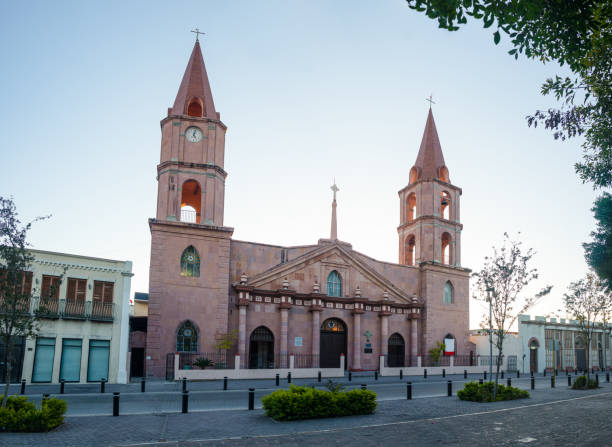

Mizael Muro - WDD 130

My name is Mizael Muro, i am from Matamoros, Tamaulipas Mexico, i love go fishing and spend time with my family, i try my best to build a platform to help the people have more control about them vehicle, i am learning more about coding to understand how it works and how can i partcipate at a develop area.
Tamaulipas, Mexico
Tamaulipas is a state in northeast Mexico, bordering Texas (USA). It has industrial cities like Reynosa and Matamoros, the capital Ciudad Victoria, and the important port of Tampico. The state's economy includes factories, oil, and farming (citrus fruits, sorghum). It has beautiful beaches like Miramar and the "El Cielo" Biosphere Reserve with rich wildlife. Tamaulipas is important for trade because of its location near the USA.